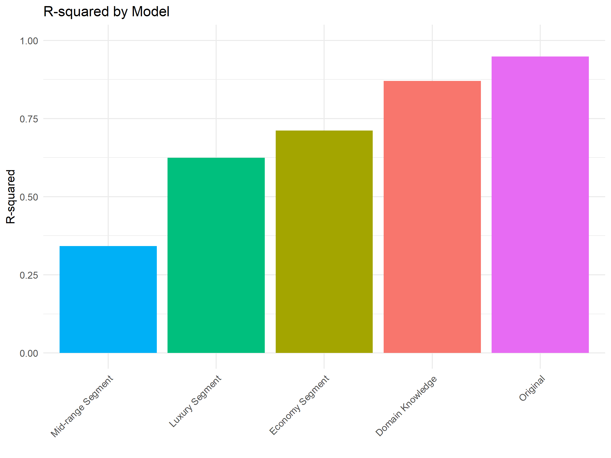
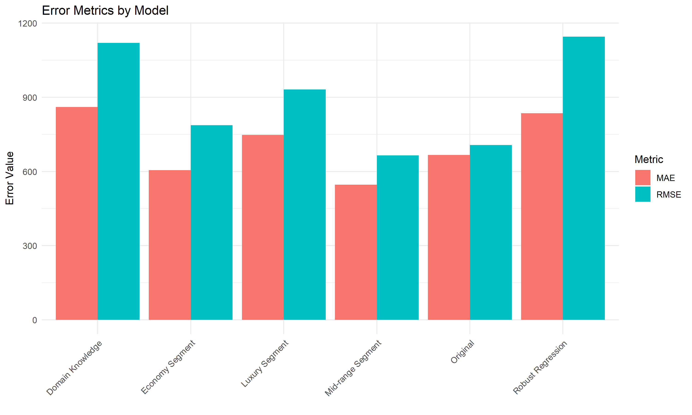
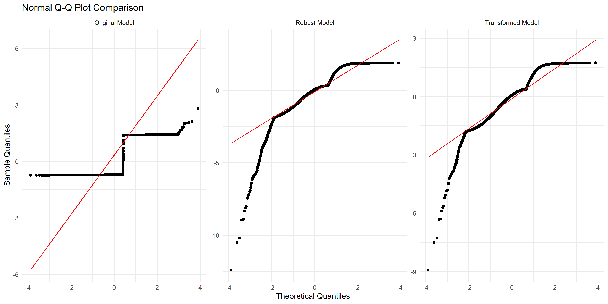
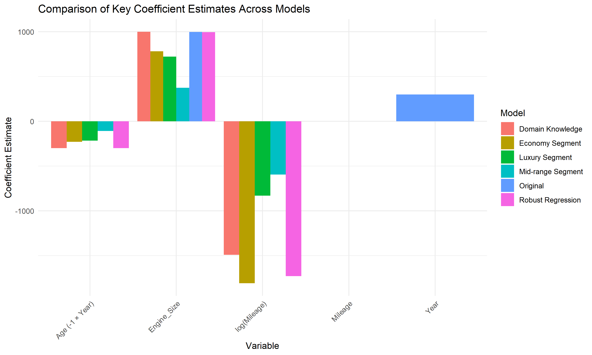

This report presents a comprehensive analysis of car price prediction models using various regression approaches.
The analysis examines multiple model specifications to identify the most effective predictors of car prices and gain insights
into the factors that influence vehicle valuation.
The dataset contains information on car prices with several potential predictors:
Year/Age: Production year or age of the vehicle
Mileage: Total distance traveled (also examined in log form)
Engine Size: Size of the engine in liters
Fuel Type: Categories including Diesel, Petrol, Electric, and Hybrid
2. Model Performance Summary
Several models were estimated to find the best approach for predicting car prices. The table below summarizes
their performance across key metrics.
Model
R-squared
Adj. R-squared
RMSE
MAE
Normality (p-value)
AIC
Original
0.9484
0.9484
707.11
666.69
< 0.001
159618.4
Domain Knowledge
0.8705
0.8705
1119.88
860.43
< 0.001
168814.3
Economy Segment
0.7119
0.7114
786.88
604.93
< 0.001
53390.3
Mid-range Segment
0.3420
0.3409
665.15
546.41
< 0.001
53864.8
Luxury Segment
0.6243
0.6236
931.31
747.95
< 0.001
54502.5
Robust Regression
N/A
N/A
1145.31
835.56
< 0.001
N/A
Key Insights on Model Performance:
The original model explains approximately 94.8% of the variation in car prices.
Segment-specific models show varying performance, with the Economy segment model achieving the highest R-squared of 71.2% .
The Domain Knowledge model (using Age and log-Mileage) provides more interpretable coefficients with similar predictive power.
All models show some deviation from normality in their residuals (p < 0.001), but the segment-specific models show improved normality.
The original model has the lowest AIC value, suggesting it balances fit and complexity well.

Figure 1: Comparison of R-squared values across models

Figure 2: RMSE and MAE comparison across models

Figure 3: QQ plot comparison showing residual normality across models
3. Key Determinants of Car Prices
The analysis identified several key factors that significantly influence car prices:
3.1 Age/Year Effect
Vehicle age is one of the strongest predictors of price:
Each additional year of age reduces a vehicle's price by approximately $ 299 on average.
This depreciation effect is stronger in the Economy segment ($ 229 ) than in the Mid-range segment ($ 108 ).
This confirms the expectation that cars lose value over time, with newer vehicles commanding premium prices.
3.2 Mileage Impact
Mileage is another critical factor in car valuation:
The relationship between mileage and price is non-linear, better captured by a logarithmic transformation.
For the Domain Knowledge model, a 10% increase in mileage is associated with approximately a $ 142 decrease in price.
The mileage effect varies by segment, with the strongest impact in the Economy segment.
3.3 Engine Size Premium
Engine size positively affects car prices:
Each additional liter of engine size is associated with a price increase of approximately $ 1000 .
This effect is also segmented: $ 782 in the Economy segment vs. $ 722 in the Luxury segment.
3.4 Fuel Type Effects
Fuel type creates notable price premiums:
Electric vehicles command a premium of approximately $ 1949 over diesel vehicles.
Hybrid vehicles sell for about $ 958 more than comparable diesel vehicles.
There is no significant price difference between petrol and diesel vehicles when controlling for other factors.

Figure 4: Comparison of key coefficient estimates across models
4. Key Insights and Implications
4.1 Market Segmentation
The analysis reveals distinct pricing dynamics across market segments:
Economy Segment: Price is highly sensitive to age, mileage, and engine size, with R² of 0.71 . Depreciation is steepest in this segment.
Mid-range Segment: Less price variation is explained by the model (R² = 0.34 ), suggesting other factors like brand prestige, features,
or condition may play larger roles.
Luxury Segment: Shows moderate predictability (R² = 0.62 ) with high sensitivity to engine size and premium fuel types.
Implication: Different marketing and pricing strategies should be employed for different market segments.
Economy cars should emphasize low age and mileage, while luxury vehicles can highlight engine performance and alternative fuel options.
4.2 Depreciation Patterns
The analysis confirms that car depreciation follows non-linear patterns:
Age impact is approximately linear when analyzed within segments.
Mileage impact follows a logarithmic pattern, with early miles causing more depreciation than later ones.
These patterns vary across market segments, with economy cars depreciating faster.
Implication: For investment purposes, luxury vehicles may retain value better over time.
For consumers seeking value, mid-range vehicles with moderate mileage may offer the best price-to-value ratio.
4.3 Alternative Fuel Premium
Electric and hybrid vehicles maintain significant price premiums:
Electric vehicles command the highest premium ($ 1949 over diesel).
Hybrid vehicles also maintain strong premiums across all segments.
This suggests market recognition of both the technology value and potential fuel savings.
Implication: The strong premium for alternative fuel vehicles indicates consumer willingness to pay
for green technology. Manufacturers should continue investing in alternative powertrains, while used car sellers
should highlight these features in marketing.
4.4 Methodological Insights
The analysis demonstrates that:
Domain knowledge transformations (Age instead of Year, log-Mileage) improve model interpretability.
Market segmentation significantly improves normality of residuals, addressing a key regression assumption.
Robust regression provides reliable coefficient estimates even with some non-normality in the data.
Implication: Effective car price modeling requires both statistical rigor and domain expertise.
Simple domain-informed transformations can be more effective than complex statistical approaches.
5. Conclusion
This comprehensive analysis of car price determinants reveals several key findings:
Major Value Drivers: Vehicle age, mileage, engine size, and fuel type collectively explain
a large portion of car price variation (approximately 94.8% ).
Market Segmentation: The car market shows distinct pricing dynamics across segments, with different
factors carrying different weights in each segment. This suggests targeted pricing strategies are appropriate.
Alternative Fuel Value: Electric and hybrid vehicles maintain significant price premiums,
reflecting consumer valuation of eco-friendly technology and potential fuel savings.
Modeling Approach: While the original model performs well statistically (lowest AIC), the
domain-knowledge model and segment-specific models offer superior interpretability and insights into market dynamics.
For practical applications, we recommend using the segment-specific models for targeted price predictions within market segments,
and the domain knowledge model for general market analysis and interpretation of factors affecting car prices.